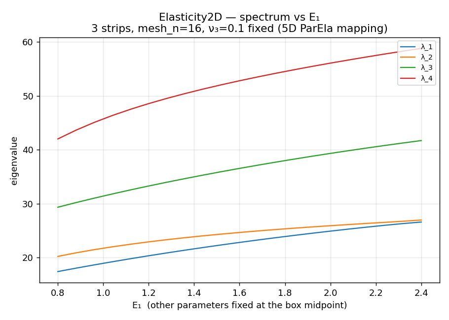
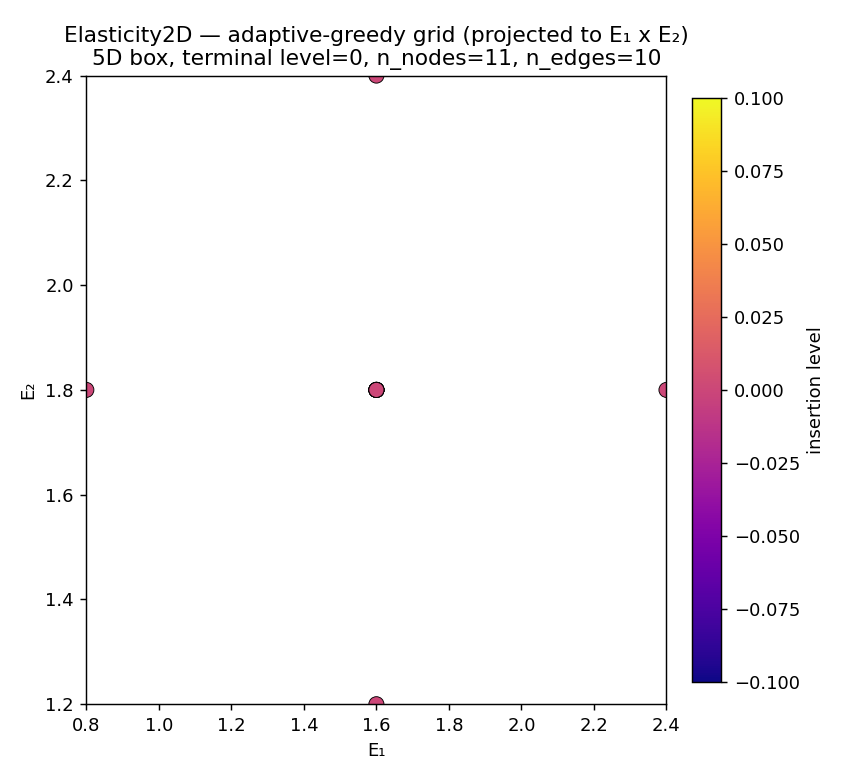

A 2-D plane-stress elasticity eigenproblem
This page treats a plane-stress linear-elasticity eigenproblem with per-face Lamé coefficients. It is the only vector-valued PDE among the examples — useful as evidence that the greedy machinery is not specialised to scalar diffusion.
The model
2D plane-stress linear elasticity on \Omega = [0,1]^2, fully Dirichlet:
-\nabla \cdot \sigma(u) \;=\; \lambda\,\rho\,u \quad \text{in } \Omega, \qquad u = 0 \text{ on } \partial\Omega,
with the linear-elastic stress
\sigma(u) \;=\; \lambda_L(\mu)\,(\nabla\!\cdot u)\,I \;+\; 2\,\mu_L(\mu)\,\varepsilon(u), \quad \varepsilon(u) = \tfrac{1}{2}\bigl(\nabla u + (\nabla u)^\top\bigr).
The Lamé parameters \bigl(\lambda_L,\,\mu_L\bigr) are piecewise-constant on faces; the parameter mapping converts each face’s (E_f, \nu_f) to its Lamé pair (\lambda_L^{(f)}, \mu_L^{(f)}).
Discretisation
| Quantity | Value |
|---|---|
| Element | Vector P1 |
| Default geometry | unit square split into N vertical strips |
| Affine decomposition | K(\mu) = \sum_f \lambda_L^{(f)}\,K_{\text{lam}}^{(f)} + \mu_L^{(f)}\,K_{\mu}^{(f)} |
The stiffness matrix is affine in the per-face Lamé parameters, so each face’s two component matrices are assembled once and recombined per parameter point.
Parameter mappings
Two parameter mappings are available:
| Mapping | d_{\text{param}} | Use |
|---|---|---|
| 5D — (E_1, \nu_1, E_2, \nu_2, E_3) with \nu_3 = 0.1 fixed | 5 | one Poisson ratio held constant so the box edges line up |
| 6D — all (E_f, \nu_f) free | 6 | full elasticity sweep with every face’s pair free |
This page uses the 5D mapping. The figures here are sized for a fast page render; a deeper 6D exploration is deferred to a follow-up.
A 5-D run
Three vertical strips (\texttt{mesh\_n}=16, three faces, n_{\text{dof}}=450), 5D box
(E_1, \nu_1, E_2, \nu_2, E_3) \in [0.8, 2.4] \times [0.22, 0.34] \times [1.2, 2.4] \times [0.22, 0.34] \times [1.0, 2.0],
with n_{\text{eigs}}=4, two refinement levels, t_\pi=0.35, and t_\lambda=0.05.
Spectrum along E_1

Adaptive grid (5D, projected to E_1 \times E_2)
